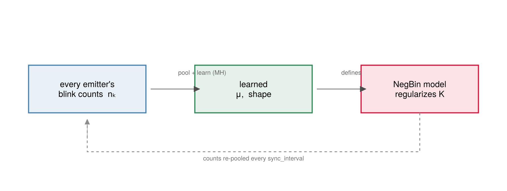

Hierarchical Learning
BaGoL does not ask you to know your sample's blinking statistics in advance. The number of localizations a single emitter produces is modelled as a negative binomial whose mean $\mu$ and shape $\alpha$ are themselves unknown — a hierarchical prior. Rather than fix these hyperparameters, the sampler puts Gamma hyperpriors on them and learns them jointly with the grouping, pooling information across every emitter in the field. The count model that regularizes the emitter number $K$ therefore adapts to the data: a sparsely-blinking dSTORM dataset and a densely-blinking DNA-PAINT dataset are fit with different learned $(\mu, \alpha)$ from the same code, with no manual tuning.
Concretely, the count hyperparameters $\mu$ and $\alpha$ are not fixed by default — they are updated from the data on a fixed cadence (default every 100 iterations: sync_interval in run_bagol, hierarchical_interval in run_collapsed_chain), gated by learn_distribution (hierarchical.jl). The Poisson-K emitter density $\rho$, when that prior is active, is controlled independently by learn_rho; a fully fixed hyperparameter run sets both learn_distribution=false and learn_rho=false.
Fixing $\mu$ and $\alpha$ to guessed values would bake an assumption about your sample's blinking into the result. Instead BaGoL treats them as shared parameters of a hierarchical model: every emitter's blink count is drawn from one common count distribution, and that distribution's parameters get their own (hyper)priors and are inferred from the data. Because all emitters inform the same $(\mu, \alpha)$, the estimate pools information across the whole field — many emitters with only a few blinks each still pin the distribution down ("borrowing strength"). Learning shared hyperparameters this way is a standard hierarchical-Bayes technique used beyond SMLM (in full-Bayes form here — the hyperparameters are sampled, not fixed to a point estimate as in empirical Bayes); it means you need not know the blinking kinetics in advance. In your output: final_μ / final_shape are the final learned (last-sampled) values, and the convergence_trace shows them settling.

The count distribution's parameters are learned from every emitter's blink counts and feed straight back into the NegBin model that regularizes $K$ — relearned every sync_interval iterations.
$\mu$ and shape $\alpha$ — Metropolis–Hastings
Both are updated by a log-normal random-walk Metropolis–Hastings step against the per-cluster negative-binomial likelihood and a Gamma prior. For $\mu$ (shape $\alpha$ is analogous, with both NegBin parameters depending on it):
\[\mu' = \mu\, e^{s\xi},\ \xi \sim \mathcal{N}(0,1), \qquad \log\alpha_{\text{acc}} = \big[\log\mathcal{L}(\mu') - \log\mathcal{L}(\mu)\big] + \big[\log p(\mu') - \log p(\mu)\big] + \underbrace{(\log\mu' - \log\mu)}_{\text{Jacobian}},\]
where $\mathcal{L}(\mu) = \prod_{k}\mathrm{NegBin}(n_k;\ \alpha,\ \alpha/(\alpha+\mu))$ over active clusters, and the multiplicative walk contributes the log-Jacobian $\log\mu' - \log\mu$. The priors are $\mu \sim \mathrm{Gamma}(2, 5)$ (mean 10) and $\alpha \sim \mathrm{Gamma}(2, 1)$ (mean 2); proposals are bounded to $[1, 500]$ and $[0.5, 50]$ respectively.
Two regimes exist:
- Partitioned
run_bagolpath — an $N$-step (50) adaptive kernel that pools counts across all partitions (excluding clusters that contain overlap localizations) and tunes the step size $s$ by a Robbins–Monro rule toward ≈ 0.30 acceptance during burn-in; the step size is then frozen, preserving ergodicity. - Standalone
run_collapsed_chain— a single-step, fixed-scale ($s = 0.3$) version.

The $K$ / $\mu$ / shape / $\rho$ traces over the chain with the burn-in line, for a field of ~2400 emitters ($K$ is the total emitter count). $\mu$ and shape settle as the chain learns the count distribution; $\rho$ stays flat — it is dormant under the default locmix model.
$\rho$ — conjugate Gibbs (flat model only)
The Poisson-$K$-prior density $\rho$ (used only under spatial_model = :flat) has a conjugate Gamma posterior and is drawn exactly — no accept/reject — from
\[\rho \mid K, A \;\sim\; \mathrm{Gamma}\big(\text{shape } a + K,\ \text{rate } b + A\big),\]
with $\rho \sim \mathrm{Gamma}(2, 1)$ as prior. Under the default :locmix model there is no Poisson $K$ prior, so this step does not run; $\rho$ stays at its prior mean.
How learning closes the loop
Learned $\mu$ and $\alpha$ feed straight back into the count model that scores every $K$-changing move: a larger learned $\mu$ (more localizations per emitter) lowers the count-model penalty for fewer, larger clusters, and vice versa. The convergence trace above is the direct readout of this feedback.

The count distribution the sampler learns (red) against the true generating one (blue), with their means (dashed), over a field of ~2400 emitters. With realistic statistics the learned distribution tracks the true one closely.
Once the chain has run, we still need a single point estimate from the posterior — that is MAP-N Estimation.